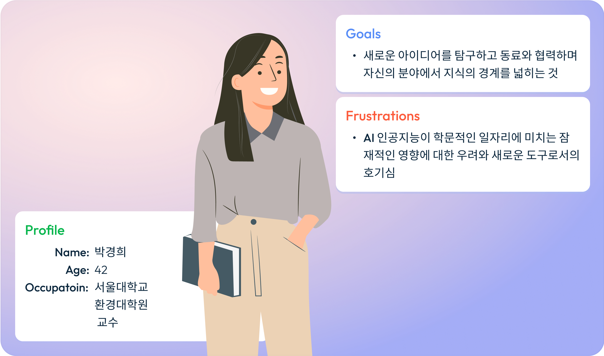
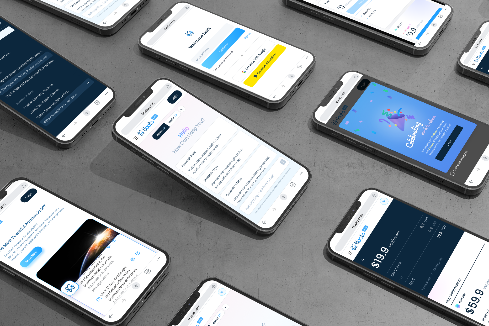
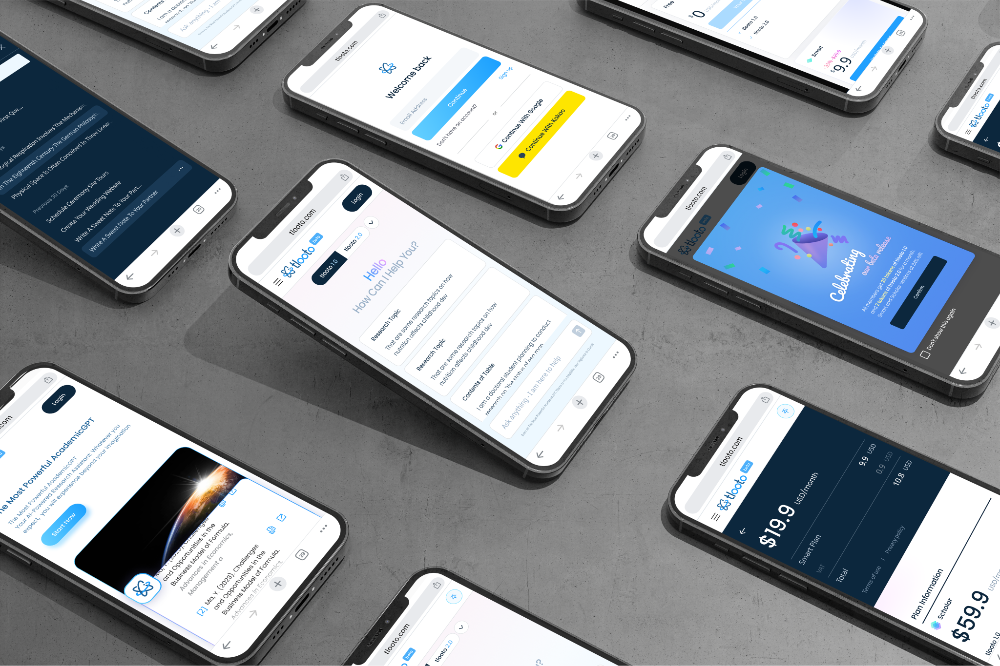

Design Strategy
AI-Research Assistant의 디자인 전략은 UX Reserach에서 출발했습니다.
tlooto는 유저의 가능성을 탐험하는 "학습 보조"로서의
1. 친근함(friendly) 2. 경쾌함(colorful) 3. 개성이 있는(memoriable)
디자인 전략을 세워 UI 디자인 및 브랜딩, 홍보물 디자인에 적용하였습니다.
-
UX Research
Persona
tlooto는 "유망한 대학의 교수" 타입의 페르소나를 타겟으로한 시장이 가장 진입이 힘들지만 경쟁력이 있다고 정의하였습니다.
페르소나 리서치를 통해 그들의 가장 큰 어려움인 "인공 지능" 출현에 따른 의기 의식을 "인공 지능"에 대한 기대감과 호기심으로 변화시키는 것을 디자인 목표로 삼았습니다. -
UX Research
Competitive Audit
경쟁사 분석을 통해 같은 비지니스 사이즈를 지닌 "c사"의 전략이 tlooto에 가낭 적합하다고 판단하였습니다.
따라서 전체적으로 친근하고, 경쾌하며, 인상에 깊게 각인될 수 있는 디자인의 일관성을 주고자 노력했습니다.
Color System
경쾌한 인상을 위해 채도 높은 핑크색과 파란색을 포인트 컬러로 사용하였고, 친근한 인상을 위해 그라디언트를 적극적으로 배치하였습니다. "기억에 남는 경쾌한" 인터페이스를 유지하면서도 "리포트"의 가독성을 위해서 "차분한"의 블루 그레이를 곳곳에 사용하였고, 이 둘을 연결성을 주는 블루 베리에이션으로 전반적인 인터페이스를 조화롭게 조율하였습니다.

Font System
친근한 인상을 위해 곡선이 많이 열려 있고, 가로 비율이 넓은 "Poppins"을 메인 폰트로 사용하였으며, "리포트의 가독성"과 "다국어 기능"을 위해 "Noto Sans"를 서브 폰트로 사용했습니다. 인상이 다른 두 폰트를 조화롭게 쓸 수 있는 폰트 크기, 굵기, 자간 및 행간 디자인의 완성도를 높이려 노력하였습니다.

Components Library
Final Screen Design


 

Advertisement Design
"인공 지능" 출현에 따른 의기 의식을 "인공 지능"에 대한 기대감과 호기심으로 변화시키기 위해 "we fuel your journey"를
메인 메시지로 정하여, 친근하고 경쾌한 "학습 도구"의 이미지를 전달하고자 디자인하였습니다.
또한 UI에서 사용한 디자인 톤과 연결성을 줄 수 있는 컬러와 폰트를 사용하여 일관성 있는 브랜딩을 구축하고자 노력하였습니다.